Eu transformo o seu processo em um sistema
Aplicações web e sistemas de gestão sob medida. Da planilha no limite ao software que a sua operação usa todo dia.
Entendo sua operação.
Desenho a solução. Entrego funcionando.
Eu não entrego um orçamento fechado e sumo por três meses. Eu mergulho em como o seu negócio funciona de verdade, desenho a solução com você e construo — usando IA como alavanca pra encurtar o que levaria meses.
Entendo o negócio
Antes de qualquer linha de código, entendo a operação, o gargalo e o que realmente importa resolver.
Desenho o sistema
Modelo de dados, regras e arquitetura pensados pra durar e crescer junto com o negócio.
Entrego rápido
A IA acelera a produção. Você vê o sistema tomando forma sem a espera de um time inteiro.
Sistemas sob medida pra sua operação
Sistemas de gestão
Produção, estoque, pedidos, planejamento — no lugar de planilhas que travam.
Dashboards & previsão
Indicadores, relatórios e previsão de demanda que ajudam a decidir com dados.
Aplicações sob medida
Ferramentas internas, calculadoras e automações feitas do seu jeito.
Digitalização de processos
Aquele processo que vive no papel ou na cabeça de alguém, virando sistema.
IA acelerando cada etapa
A IA não substitui o pensamento — multiplica a velocidade. Eu dirijo, decido e valido; ela executa o trabalho pesado.
Compreender
Converso, mapeio o processo, acho a dor real.
Desenhar
Modelo dados e regras. Arquitetura antes do código.
Construir
IA acelera a produção — rápido e iterativo.
Validar
Testo com os seus dados reais. Ajusto até funcionar.
Um ERP de produção completo,
no lugar de uma planilha frágil
Planilha no limite
Controle de produção que não aguentava vários operadores, sem visão do que produzir nem quando. Decisões no feeling.
Sistema que cresce junto
Planejamento, ordens de produção, previsão de demanda e controle — numa ferramenta usada todo dia.
Fila & ordens de produção
Geração de OPs, programação por prazo e capacidade, fila por posto.
Estrutura de produtos (BOM)
Composição multinível e roteiros de produção por família.
Previsão de demanda
Metodologia própria, validada contra vendas reais.
Calculadoras de produção
Aproveitamento de material, necessidade e peso de compra.
Sistemas de PCP/ERP
Algumas das telas do sistema em funcionamento — do planejamento de demanda ao apontamento da produção e controle da operação.
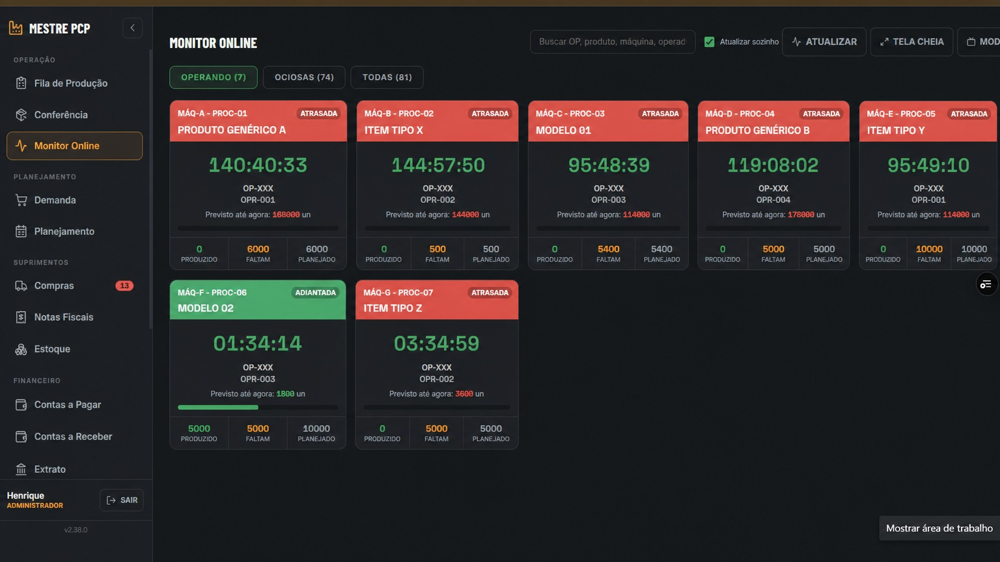
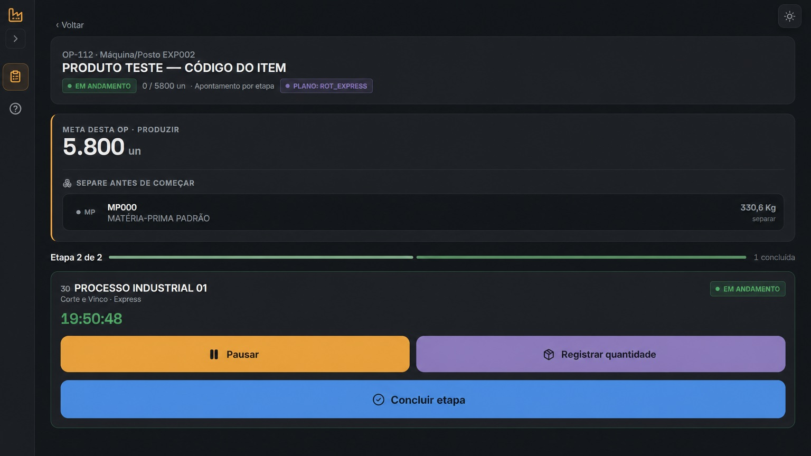
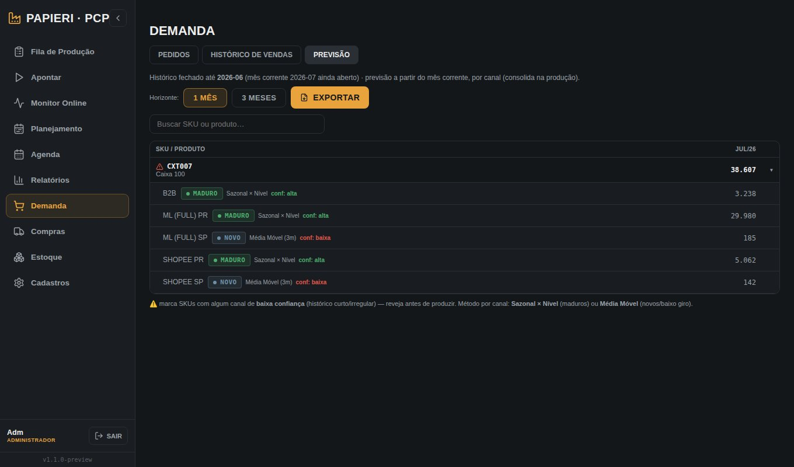
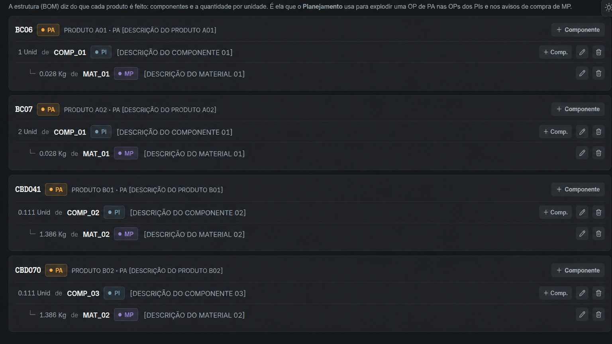
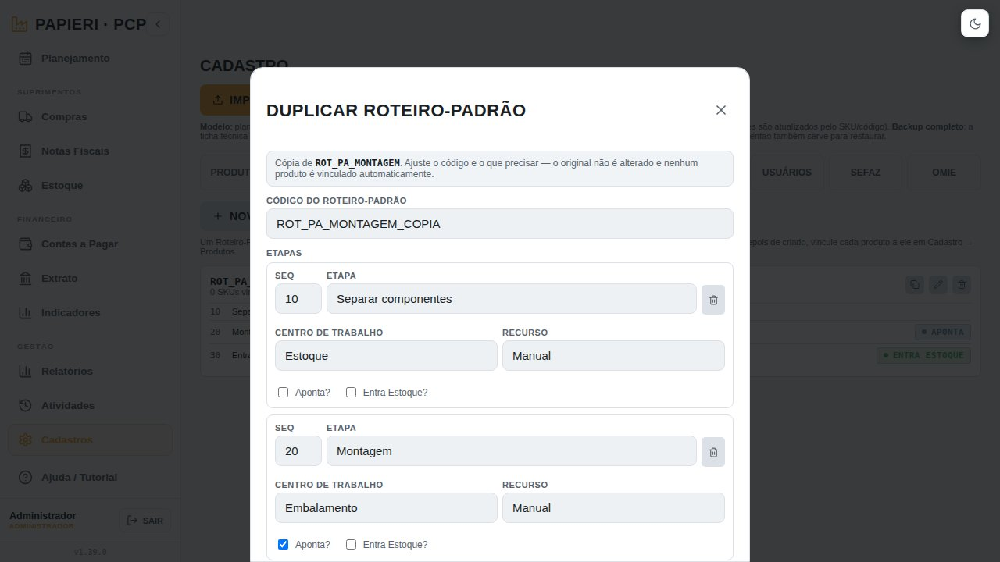
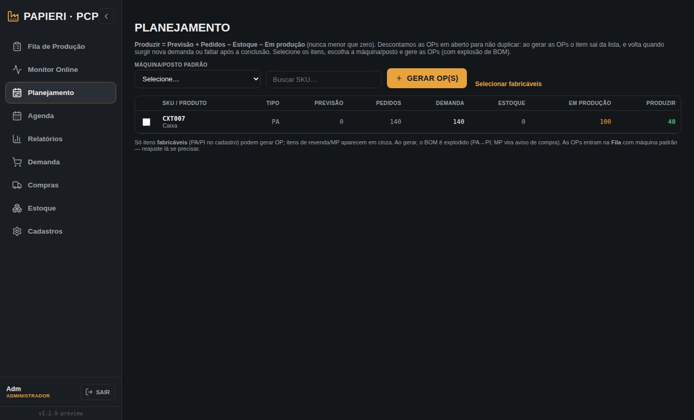
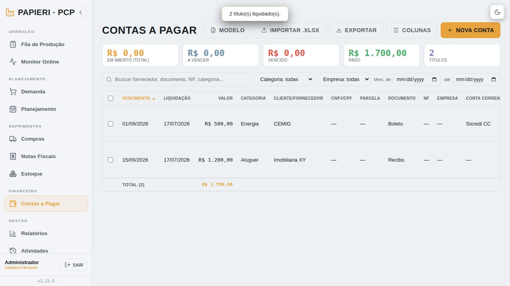
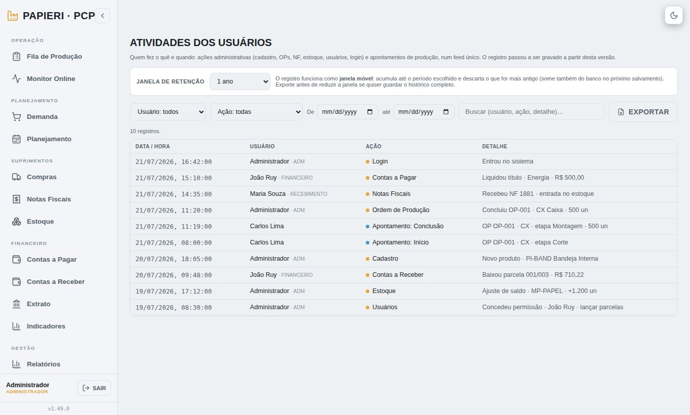
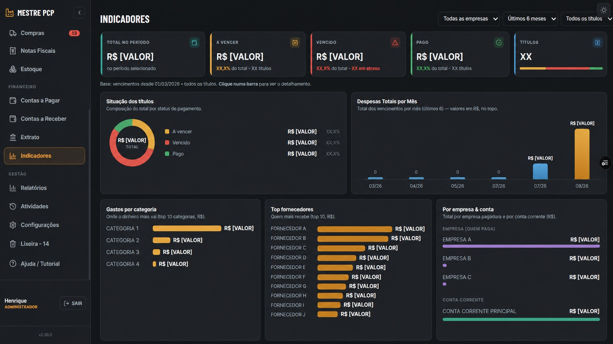
Outros sistemas e exemplos:
Cada projeto nasce de um problema real de negócio. Aqui estão outros sistemas que foram desenvolvidos para ganhar controle, clareza e sobretudo velocidade.
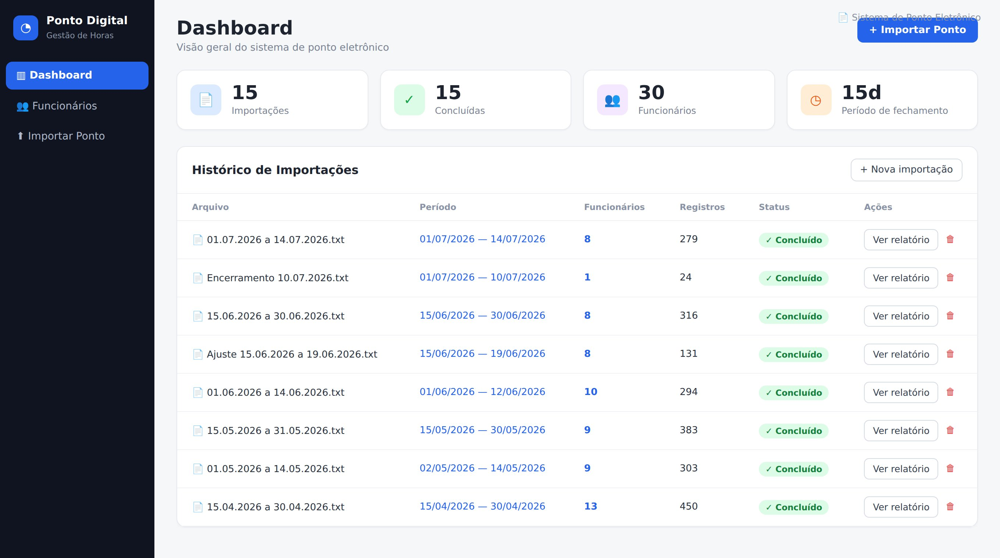
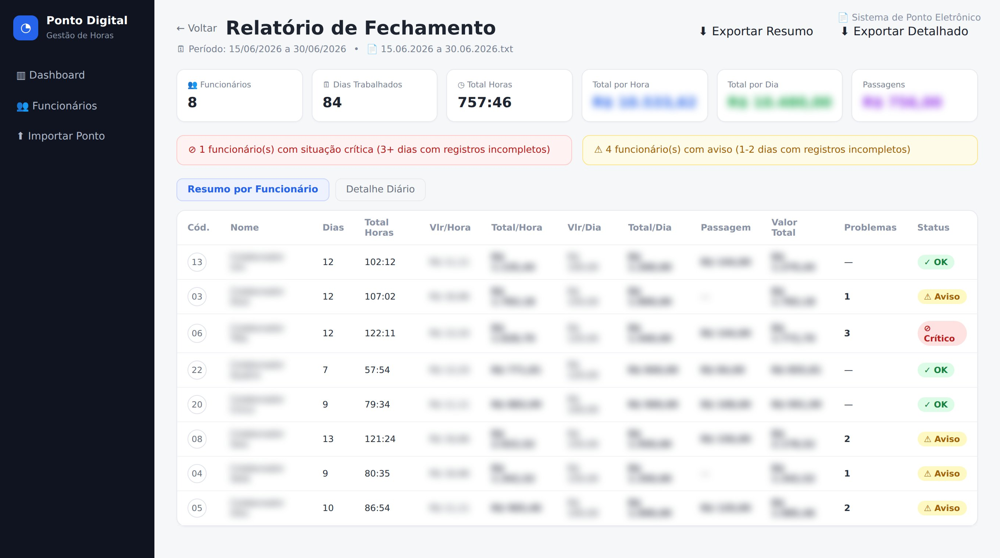
Ponto Digital
Sistema de ponto eletrônico que importa registros e fecha pagamentos por período. Calcula horas, valores por hora e por dia, passagens, e sinaliza automaticamente colaboradores com registros incompletos.
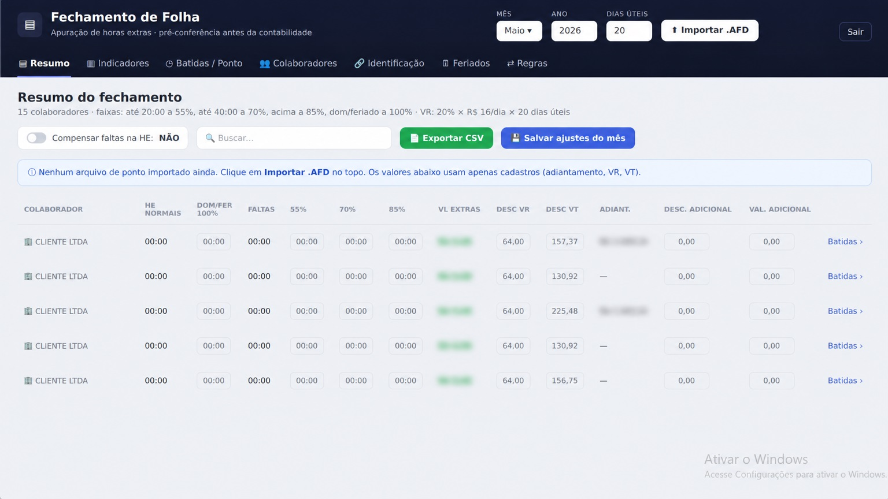
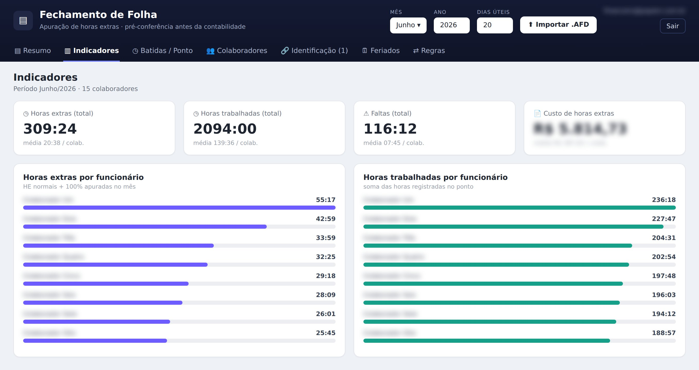
Fechamento de Folha
Apuração de horas extras e pré-conferência antes da contabilidade. Importa AFD, aplica faixas de HE configuráveis, calcula VT, VR, faltas e adicionais, e entrega indicadores por colaborador.
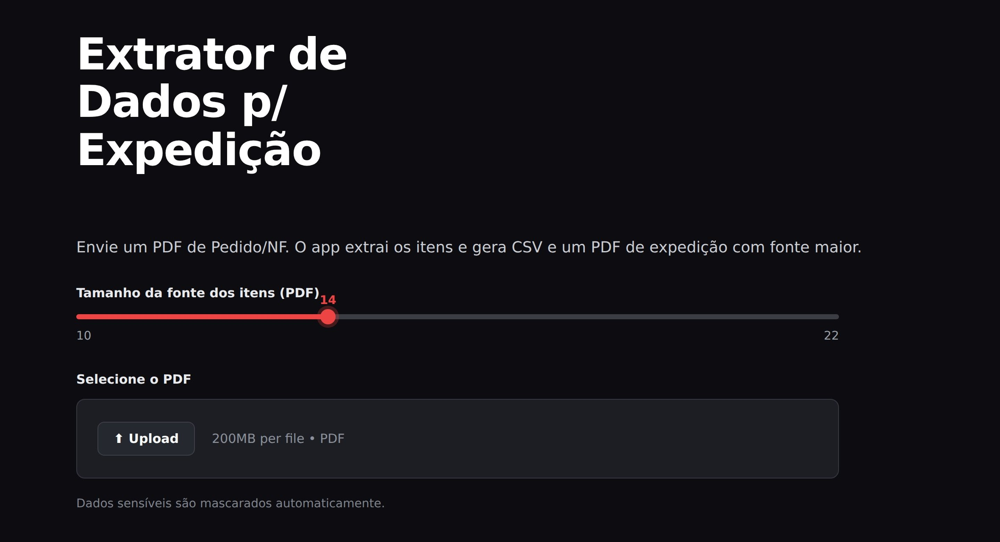
Extrator para Expedição
Lê o PDF de pedido/nota fiscal do ERP e gera uma picklist funcional pra operação — em CSV e num PDF de expedição com fonte ampliada e dados sensíveis mascarados automaticamente.
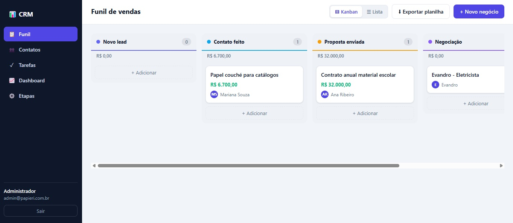
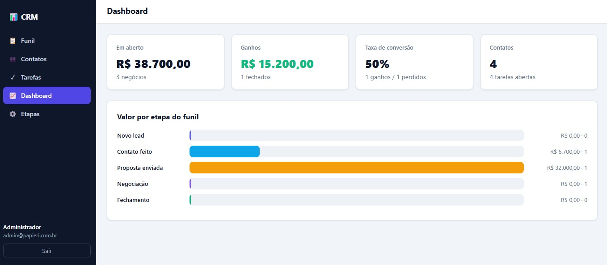
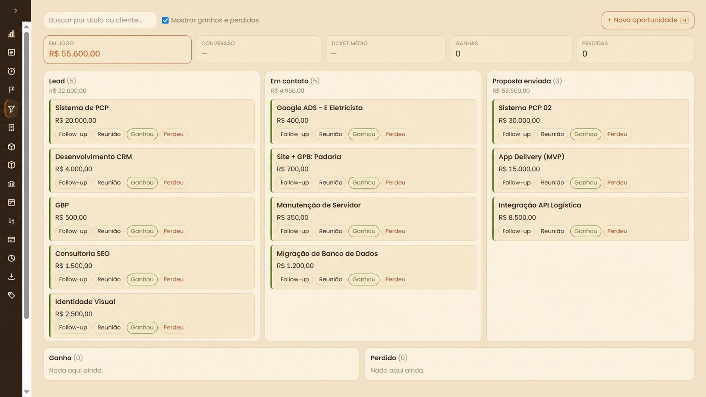
CRM de Vendas
Funil de vendas visual em Kanban, com etapas configuráveis, valor e responsável por negócio. Contatos, tarefas com prazos (atrasadas, hoje e próximas), painel de indicadores — em aberto, ganhos e taxa de conversão — e exportação da carteira para planilha.
O que você ganha?
Velocidade real
IA acelera a entrega — semanas, não meses.
Feito sob medida
Nada de sistema genérico. Construído pro seu processo.
Falo a sua língua
Entendo negócio, não só código. A conversa é sobre resolver.
Você acompanha
Validação com os seus dados em cada etapa. Sem caixa-preta.
Tem um processo que merece virar sistema?
A primeira conversa já é trabalho: eu mapeio seu processo e te digo se vale a pena virar sistema — inclusive quando a resposta é "não vale".
> Quero meu diagnóstico gratuitoAbre direto no meu WhatsApp — respondo no mesmo dia.